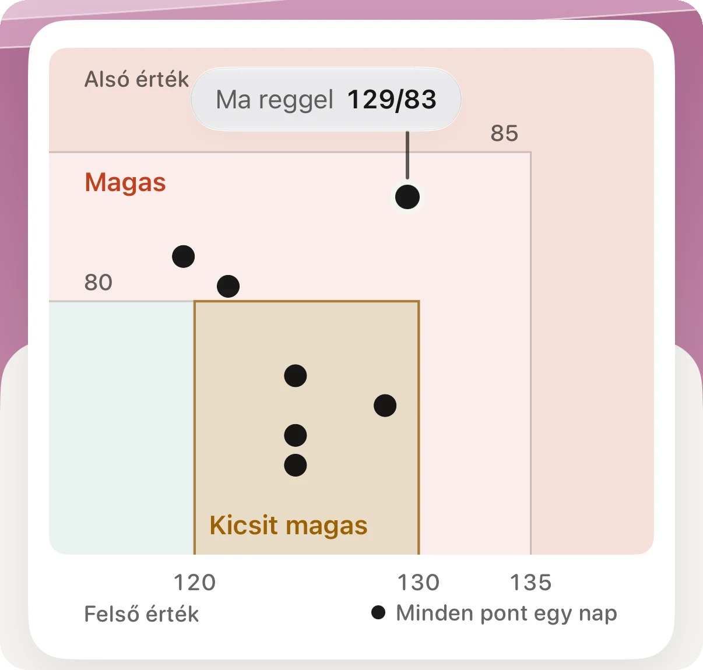
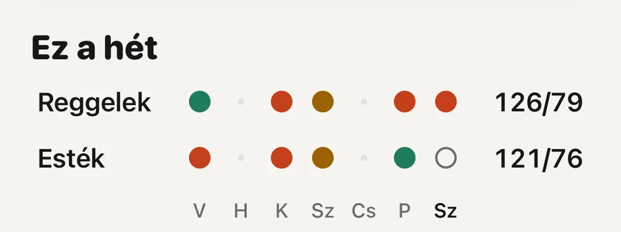

A gyakorlatban · Szív

Vedd úgy, hogy ideje mérni, de ez még nem diagnózis. Az óra nem mér vérnyomást. A pulzusérzékelő 30 napnyi adatában keres mintát, és ha talál, az Apple azt kéri, hogy hét napig naponta kétszer mérj felkaros mérővel, és beszélj egy orvossal. A mandzsettával mért hét átlaga az a szám, ami számít.
Az Apple Watchon nincs mandzsetta, ezért vérnyomást nem tud mérni. A hipertóniával kapcsolatos értesítések az óra hátulján lévő optikai pulzusérzékelőt használják, ugyanazt, amelyik a pulzusodat olvassa. A funkció azt figyeli, hogyan reagálnak az ereid az egyes szívverésekre, ezt a háttérben 30 napos időszakokon át gyűjti, és értesítést küld, ha a minta magas vérnyomásra utal (FDA, 2025).
Az értesítésben tehát nincsenek számok. Nem azt mondja, hogy 150/95. Azt mondja, hogy az elmúlt hónap adatai olyanok, mint a magas vérnyomásban élőké, és érdemes rendesen utánanézni.
Azért érdemes, mert a magas vérnyomás többnyire néma. Világszerte az érintett férfiak nagyjából fele és a nők mintegy négytizede soha nem hallotta orvostól, hogy magas a vérnyomása (NCD Risk Factor Collaboration, 2021).
Kevésbé érzékeny, mint a legtöbben gondolnák. Az amerikai engedély mögött álló vizsgálatban 2229 embert vontak be, akik 30 napig hordták az órát, és közben otthoni mérővel is mértek; közülük 1863-nak lett elég adata. Akiknek magas volt a vérnyomásuk, azok közül 100-ból nagyjából 41 kapott értesítést. Akiknek nem volt magas, azok közül 100-ból nagyjából 8 mégis kapott (FDA, 2025).
Ki kapott értesítést a vizsgálatban
Ebből két dolog következik. Az értesítés elég erős jelzés ahhoz, hogy lépj, de tévedhet, és csak a mandzsettás mérés dönti el. Az óra pedig a magas vérnyomásúak több mint felét nem veszi észre, ezért ha hallgat, az nagyon keveset mond.
Az értesítés jelzés. Ha az óra hallgat, az még nem jelenti, hogy minden rendben.
Ahol a vérnyomás egyértelműen magas volt, ott az óra jobban teljesített: a 2. fokozatú magas vérnyomásban élők közül 100-ból nagyjából 54 kapott értesítést (FDA, 2025).
A teljes mérési rend, az egyes lépések okaival együtt, a vérnyomásnaplóról szóló útmutatóban olvasható.
Akkor az értesítés valószínűleg a téves riasztások egyike volt. A vizsgálatban a normális vérnyomású emberek közül 100-ból nagyjából 8 mégis kapott értesítést. A következő szokásos orvosi vizsgálaton említsd meg, és mutasd meg a hét méréseit. Nem kell tovább naponta mérned.
Két dologra figyelj. Az otthoni mérés csak akkor számít, ha jól csináltad: a mandzsetta illik a karodra, előtte öt percet nyugodtan ültél, és mindkét mérést megtartottad. Ha pedig az óra később újra értesít, ismételd meg a hetet. A vérnyomás a korral általában emelkedik, és a második jelzés megér egy második ellenőrzést.
Ez nem jelenti azt, hogy rendben van a vérnyomásod. Az óra a vizsgálatban a magas vérnyomásúak nagyjából hattizedét nem vette észre, és az Apple is kimondja, hogy a funkció nem talál meg minden esetet (Apple Támogatás, 2026). A szokásos orvosi vizsgálatokon méresd meg a vérnyomásodat, bármit mond az órád.
A funkció nem is szól mindenkinek. Az Apple szerint nem való 22 év alattiaknak, terhesség alatt, és azoknak sem, akiknél már diagnosztizáltak magas vérnyomást. Ha kezelnek, a mérőd és az orvosod az irányadó, nem az óra.
iPhone-on nyisd meg az Egészség alkalmazást, koppints jobb fent a képedre vagy a monogramodra, majd az „Egészség-ellenőrzőlista” elemre, és a „Hipertóniával kapcsolatos értesítések” mellett a „Beállítás” gombra. Mivel a funkció 30 napos időszakokkal dolgozik, az első hónapban ne várj semmit.
Apple Watch Series 9 vagy újabb, illetve Apple Watch Ultra 2 vagy újabb órán fut, watchOS 26 vagy újabb rendszerrel. Az Apple több mint 150 országot és régiót sorol fel, köztük Magyarországot, Németországot, Ausztriát, Svájcot, az Egyesült Királyságot és az Egyesült Államokat. A legújabb óramodelleken néhány régióban még várnak az engedélyre (Apple, funkciók elérhetősége, 2026 novemberében olvasva).

Reggelek és esték egymás mellettMinden pont egy reggel vagy egy este, amikor volt mérés, a színe pedig azt mutatja, hol áll az otthoni határokhoz képest. A jobb oldali két átlag az első, amire az orvos rákérdez.
Az Aera, iPhone-ra és Apple Watchra
Maga az értesítés az Apple-é, az Aerának nincs benne szerepe. Az Aera ott kezdődik, ahová a mandzsettás mérések megérkeznek. Azokat a méréseket olvassa, amelyeket a mérőd az Apple Healthbe ment, vagy amelyeket te írsz be az Egészség alkalmazásba. Az Aerába nem kell méréseket beírnod.
Az utolsó hét olyan napod átlagát veszi, amelyen volt mérés, és ezt az otthoni határok szerint négy egyszerű szó egyikével írja le: Tartományban, Kicsit magas, Magas vagy Nagyon magas. A szó akkor jelenik meg, ha már három napon van mérésed. Addig a képernyő azt írja, hogy még tanul. A szám alatt egy mondat megmondja, a két érték közül melyik miatt kerülsz oda, és hogy reggel vagy este magasabb-e.
Az orvosi vizsgálatra a jelentés PDF-ként, táblázatként vagy QR-kódként készül. A legfeljebb egy hónapos jelentés ingyenes, ebbe belefér az értesítés utáni hét nap. Nincs fiók.
Az Aera nem orvostechnikai eszköz, és nem állít fel diagnózist. Azt, hogy magas-e a vérnyomásod, csak orvos tudja megmondani.
Nem. Az Apple Watchon nincs mandzsetta, és nem ad vérnyomásértéket. A hipertóniával kapcsolatos értesítések a pulzusérzékelő 30 napnyi adatában keresnek mintát, és azt kérik, hogy mérj mandzsettával.
A vizsgálatban a magas vérnyomásúak közül 100-ból nagyjából 41 kapott értesítést, a normális vérnyomásúak közül pedig 100-ból nagyjából 8 mégis kapott. Az értesítés ok a mérésre, a hiánya viszont nem jelenti, hogy minden rendben.
Mérj validált felkaros mérővel hét napig, reggel kétszer és este kétszer, tarts meg minden mérést, és az átlagot vidd orvoshoz. Otthon Európában a 135/85-ös vagy annál magasabb átlag számít magasnak.
Az Apple Watch Series 9 vagy újabb és az Apple Watch Ultra 2 vagy újabb, watchOS 26 vagy újabb rendszerrel, az Apple által felsorolt országokban, köztük Magyarországon. A funkció nem való 22 év alattiaknak, terhesség alatt, és annak, akinél már diagnosztizáltak magas vérnyomást.
Kapcsolódó jegyzet (angolul): mit nem tud mérni egy okosóra
Kapcsolódó útmutatók: Hogyan vezess vérnyomásnaplót, amit az orvosod is használni tud? · Mennyi a normális nyugalmi pulzus? · Mit jelent a biológiai életkor, amit az órád mutat?
 Vagy olvasd be az iPhone-oddal
Vagy olvasd be az iPhone-oddalIngyen letölthető. Regisztráció nélkül. Azzal az órával is megy, amit most hordasz.